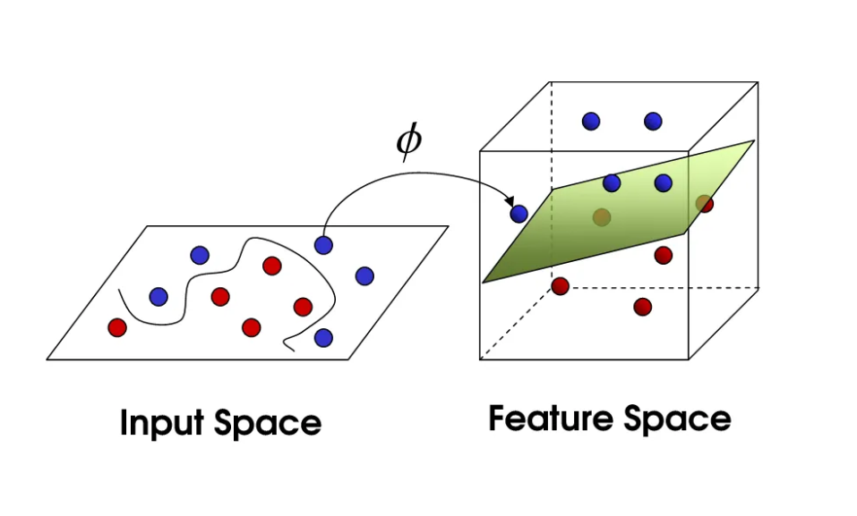
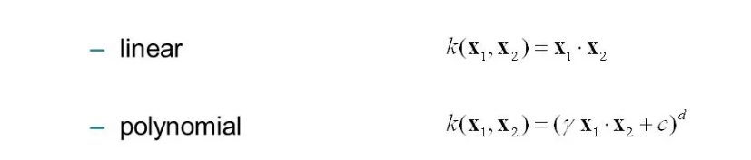
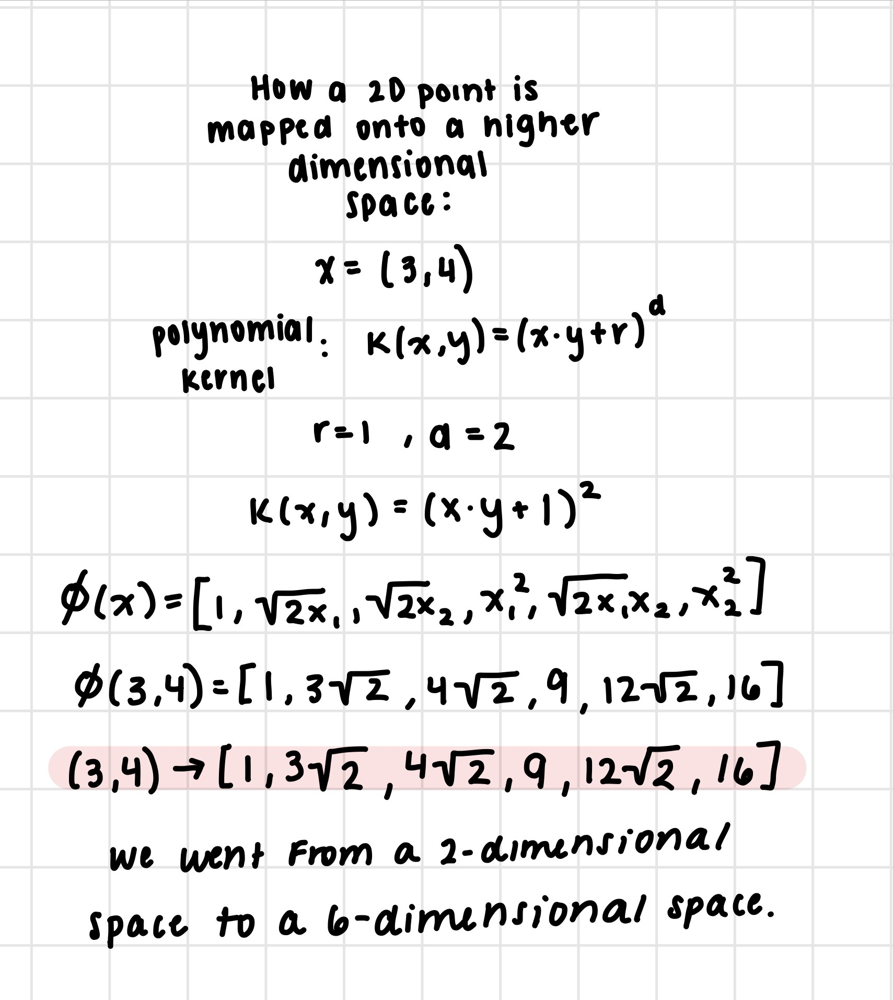
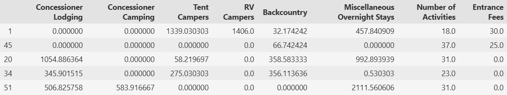
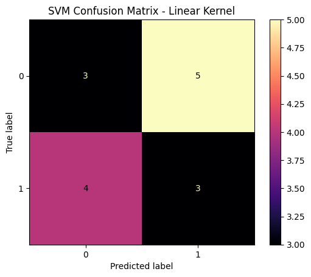
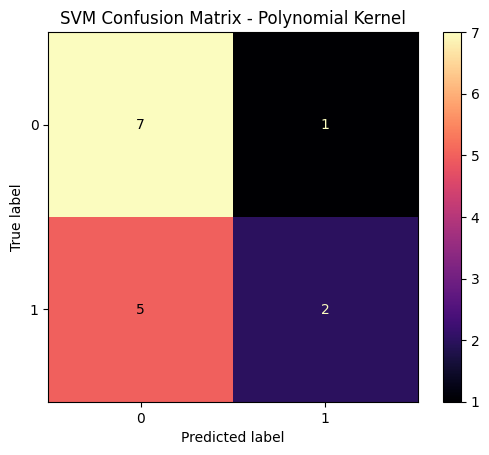
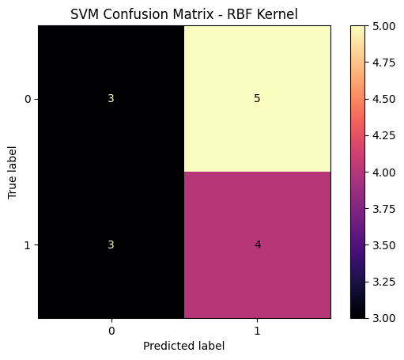
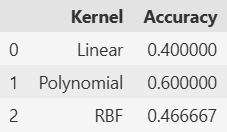

National Park Crowding Analysis
Overview
Support Vector Machine is a supervised learning algorithm that finds the best linear plane to cut through classes for classification. The goal of an SVM is to maximize the margin for better classification performance. SVM requires numeric data because every data point is treated as a geometric vector in a multi-dimensional space and attempts to draw a physical boundary through that space. Linear separators are the decision boundary between one class and another in feature space. The kernel is a function that projects the data onto a higher dimensional plane for nonlinear data to find a separation. The dot product is critical to use because it measures the relationship between two data points to see how similar they are. The polynomial kernel allows SVM to learn non-linear boundaries by mapping the data into a higher-dimensional feature space without calculating new coordinates. The RBF kernel function finds the relationships between points using only their distances with the Euclidean distance.




Data Preparation
The dataset was aggregated by park name with one row representing each national park. Since SVM requires labeled observations, a binary target variable 'High Crowding' was created. Observations above the median amount of recreation visits were labeled 1 and those below the median were labeled 0. The goal of creating this binary target was to train the SVM classifier to predict whether a national park is likely to experience high or low crowding based on characteristics such as camping activity, lodging, backcountry recreation, number of activities, and entrance fees. The model can then determine which characteristics are best for separating highly crowded parks from less crowded parks. The dataset was split into a training set of 75% and a testing set, 25%, using train_test_split(). The training set was used to build the SVM model and the testing set was used for evaluating model performance on unseen data. The two datasets are disjoint meaning that no observation appears in both sets to ensure an unbiased evaluation of the classifier.


The training and test data are disjoint because this makes sure that the model will work on unseen data. If they were not disjoint, the model would not work on new data and potentially be biased.
Resources
Results
To test each kernel, three different cost values were used (0.1, 1, 10). Cost values determine how strict penalties will be for misclassifications.

From the confusion matrix, we can see that the linear kernel did not perform well. 6 out of 15 parks were classified correctly and 9 parks were incorrect. 5 low-crowded parks were identified as high crowding and 4 high-crowded parks were classified as low-crowding. From this, the relationship between the predictor variables and crowding level is not easily separated using a simple linear boundary.

From the confusion matrix, we can see that the polynomial kernel performed better than the linear kernel. 9 out of 15 parks were classified correctly and 6 parks were classified incorrectly. The model identified 7 low-crowding parks correctly and 2 high-crowding parks. However, the model classified 5 high-crowding parks as low crowding showing that it still struggled to identify parks with high crowding. The polynomial kernel had the highest accuracy, but it was better at identifying low-crowding parks than high-crowding parks.

From the confusion matrix, we can see that the RBF kernel performed slightly better than the linear kernel but not as good as the polynomial kernel. 7 out of 15 parks were classified correctly and 8 parks were classified incorrectly. The model correctly identified 3 low-crowding parks and 4 high-crowding parks. However, it classified 5 low-crowding parks as high crowding and 3 high-crowding parks as low crowding. The RBF kernel was more balanced in identifying both classes, but its overall accuracy was lower than the polynomial kernel.

The Polynomial kernel produced the highest classification accuracy at 60% which outperformed both the Linear kernel, 40%, and the RBF kernel, 46%. Since a polynomial boundary scored best, it can be said the relationship between the predictor variables and the crowding classification is not linear.
Conclusion
The SVM model helped in this research because it provided further analysis as to what features lead to high crowding in national parks. Through PCA and clustering analysis, we learned that crowding is more complex than simply relying on visitor count. The polynomial kernel, being the method with best accuracy, showed that the recreational, lodging, activities, non-recreation activity features do not have a linear relationship with crowding but rather something more complex. Parks see high crowding due to multiple factors interacting rather than one cause. These results matter because they show that the National Park Service could use data mining methods to identify parks that need more resources, staffing, transportation planning, or visitor management strategies.